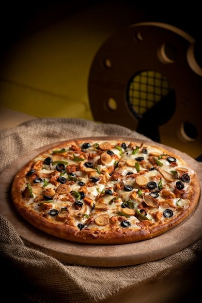

<ion-content overflow-scroll="false">
  <section class="Add-category d-flex justify-content-center align-items-center ">
    <div class="container">
      <div class="row justify-content-center">
        <div class="d-flex justify-content-center align-items-center  ">
          <div class="Add-category-content p-5 mt-5 text-center ">
            <h5 class="head-name">Sub-Category</h5>
            <div class="upload-image d-flex justify-content-center align-items-center mt-3 ">
              <figure class="col-lg-7 col-7 col-md-7 ">
                <div class="Add-category-img">
                  
                  <input type="file" id="uploadButton" accept="image/*">
                </div>
                <figcaption id="file-name"></figcaption>
              </figure>
            </div>
            <div class="C-name mt-3 mb-3">
              <select name="" id="category-name">
                <option value="">-----select----</option>
                <option value="">2</option>
                <option value="">3</option>
              </select>
            </div>
            <div class="C-name my-3">
              <input type="text" placeholder="Sub-Category Name">
            </div>
            <div class="types d-flex-wrap mb-3">
              <ion-chip class="type">Veg</ion-chip>
              <ion-chip class="type">Non-Veg</ion-chip>
              <ion-chip class="type">Cakes</ion-chip>
              <ion-chip class="type">Hot</ion-chip>
              <ion-chip class="type">Cold</ion-chip>
              <ion-chip class="type">Desserts</ion-chip>
            </div>

            <div class="C-name c-price mt-3">
              <input type="text" placeholder="Price">
            </div>
            <div class=" status d-flex justify-content-center align-items-center mt-4">
              <ion-chip class="Enable">Enable</ion-chip>
              <ion-chip class="Disable">Disable</ion-chip>
            </div>
            <div class=" Submit d-flex justify-content-center align-items-center mt-5">
              <button class=" s-button " (click)="return()"><mat-icon
                  class="Submit-icon">done_all</mat-icon>Submit</button>
            </div>
          </div>
        </div>
      </div>
    </div>
  </section>
